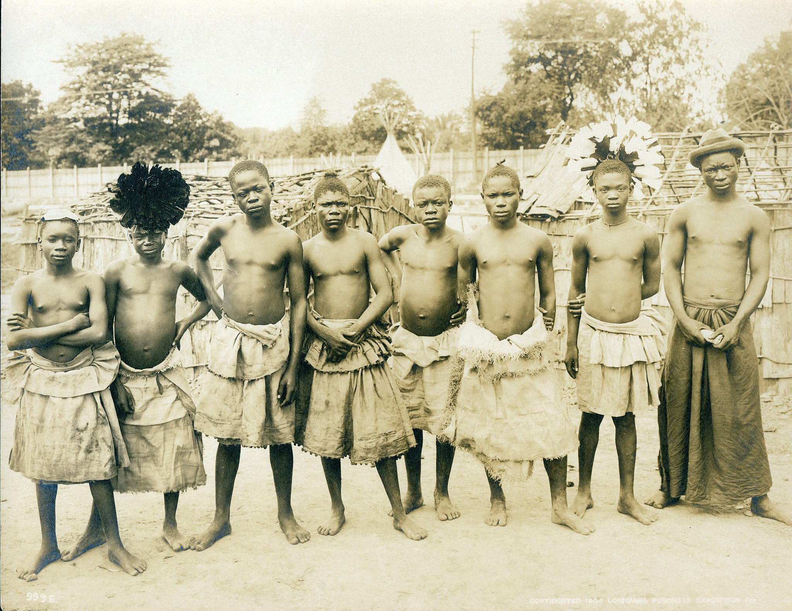

|  | Estima-se que a área onde hoje se encontra o território gabonês já era ocupada há centenas de milhares de anos. Entretanto, os grupos de pigmeus foram os primeiros a se estabelecerem de fato na região, seguido pelos povos do grupo bantu. Os primeiros exploradores vindos de outros continentes começaram a chegar ao Gabão por volta do século XV, quando os portugueses passaram pela costa gabonesa, ficando próximos de onde está a capital, Libreville. Cabe lembrar que nesse período uma série de reinos, formados pelos grupos étnicos locais, haviam sido formados no Gabão. |
Na sequência dos portugueses, vieram os holandeses e, então, os franceses. Os franceses chegaram ao Gabão durante o século XVII, mais precisamente no ano de 1630. Entretanto, foi somente no século XIX que os franceses conseguiram tornar o Gabão, de fato, uma colônia da França , inicialmente conquistando terras litorâneas e depois expandindo os seus domínios para o interior do país.